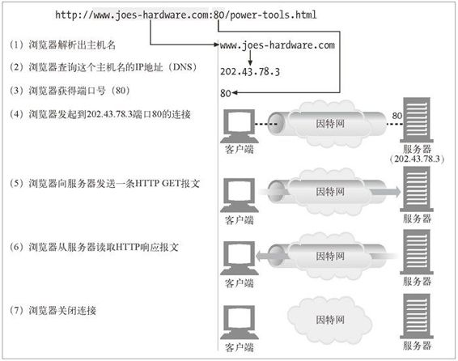
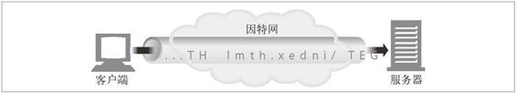
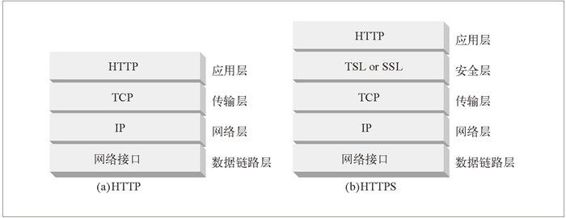
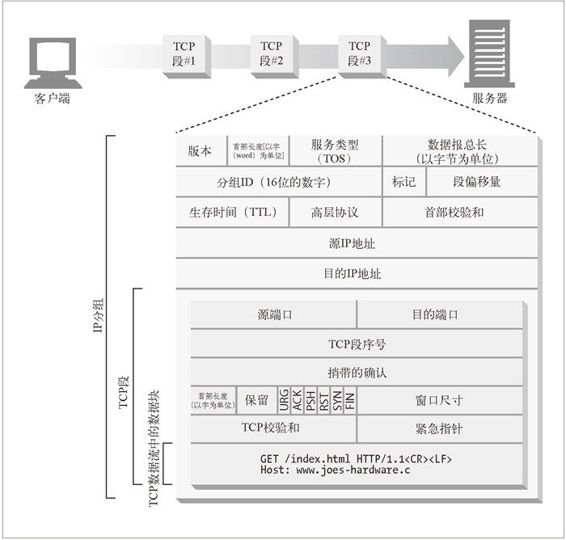
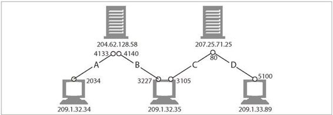
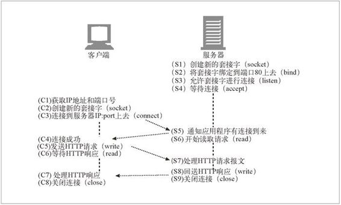

4.1 TCP 连接
世界上几乎所有的 HTTP 通信都是由 TCP/IP 承载的，TCP/IP 是全球计算机及网络设备都在使用的一种常用的分组交换网络分层协议集。客户端应用程序可以打开一条 TCP/IP 连接，连接到可能运行在世界任何地方的服务器应用程序。一旦连接建立起来了，在客户端和服务器的计算机之间交换的报文就永远不会丢失、受损或失序。1
1 尽管报文不会丢失或受损，但如果计算机或网络崩溃了，客户端和服务器之间的通信仍然会被断开。在这种情况下，会通知客户端和服务器通信中断了。
比如，你想获取 Joe 的五金商店最新的电动工具价目表：
http://www.joes-hardware.com:80/power-tools.html
浏览器收到这个 URL 时，会执行图 4-1 所示的步骤。第 (1) ～ (3) 步会将服务器的 IP 地址和端口号从 UL 中分离出来。在第 (4) 步中建立到 Web 服务器的 TCP 连接，并在第 (5) 步通过这条连接发送一条请求报文。在第 (6) 步读取响应，并在第 (7) 步关闭连接。

图 4-1 Web 浏览器通过 TCP 连接与 Web 服务器进行交互
4.1.1 TCP的可靠数据管道
HTTP实际上就是TCP连接及其使用规则。TCP 连接是因特网上的可靠连接。要想正确、快速地发送数据，就需要了解 TCP 的一些基本知识。2
2 如果要编写复杂的 HTTP 应用程序，尤其是，希望程序能够快速运行的话，所需学习的、与 TCP 内部原理及性能有关的知识就要比本章所讨论的内容多得多。我们推荐 W. Richard Stevens 编写的 TCP/IP Illustrated（《TCP/IP 详解》）系列图书（Addison Wesley 公司出版）。
TCP 为 HTTP 提供了一条可靠的比特传输管道。从 TCP 连接一端填入的字节会从另一端以原有的顺序、正确地传送出来（参见图 4-2）。

图 4-2 TCP 会按序、无差错地承载 HTTP 数据
4.1.2 TCP流是分段的、由IP分组传送
TCP 的数据是通过名为 IP 分组（或 IP 数据报）的小数据块来发送的。这样的话，如图 4-3a 所示，HTTP 就是“HTTP over TCP over IP”这个“协议栈”中的最顶层了。其安全版本 HTTPS 就是在 HTTP 和 TCP 之间插入了一个（称为 TLS 或 SSL 的）密码加密层（图 4-3b）。

图 4-3 HTTP 和 HTTPS 网络协议栈
HTTP 要传送一条报文时，会以流的形式将报文数据的内容通过一条打开的 TCP 连接按序传输。TCP 收到数据流之后，会将数据流砍成被称作段的小数据块，并将段封装在 IP 分组中，通过因特网进行传输（参见图 4-4）。所有这些工作都是由 TCP/IP 软件来处理的，HTTP 程序员什么都看不到。

图 4-4 承载 TCP 段的 IP 分组，它承载了 TCP 数据流中的小块数据
每个 TCP 段都是由 IP 分组承载，从一个 IP 地址发送到另一个 IP 地址的。每个 IP 分组中都包括：
一个 IP 分组首部（通常为 20 字节）；
一个 TCP 段首部（通常为 20 字节）；
一个 TCP 数据块（0 个或多个字节）。
IP 首部包含了源和目的 IP 地址、长度和其他一些标记。TCP 段的首部包含了 TCP 端口号、TCP 控制标记，以及用于数据排序和完整性检查的一些数字值。
4.1.3 保持TCP连接的持续不间断地运行
在任意时刻计算机都可以有几条 TCP 连接处于打开状态。TCP 是通过端口号来保持所有这些连接的正确运行的。
端口号和雇员使用的电话分机号很类似。就像公司的总机号码能将你接到前台，而分机号可以将你接到正确的雇员位置一样，IP 地址可以将你连接到正确的计算机，而端口号则可以将你连接到正确的应用程序上去。TCP 连接是通过 4 个值来识别的：
< 源IP 地址、源端口号、目的IP 地址、目的端口号>
这 4 个值一起唯一地定义了一条连接。两条不同的 TCP 连接不能拥有 4 个完全相同的地址组件值（但不同连接的部分组件可以拥有相同的值）。
在图 4-5 中，有 4 条连接：A、B、C 和 D。表 4-1 列出了每个端口的相关信息。

图 4-5 4 个不同的 TCP 连接
表4-1 TCP连接值
| 连 接 | 源IP地址 | 源 端 口 | 目的IP地址 | 目的端口 |
|---|---|---|---|---|
| A | 209.1.32.34 | 2034 | 204.62.128.58 | 4133 |
| B | 209.1.32.35 | 3227 | 204.62.128.58 | 4140 |
| C | 209.1.32.35 | 3105 | 207.25.71.25 | 80 |
| D | 209.1.33.89 | 5100 | 207.25.71.25 | 80 |
注意，有些连接共享了相同的目的端口号（C 和 D 都使用目的端口号 80）。有些连接使用了相同的源 IP 地址（B 和 C）。有些使用了相同的目的 IP 地址（A 和 B，C 和 D）。但没有两个不同连接所有的 4 个值都一样。
4.1.4 用TCP套接字编程
操作系统提供了一些操纵其 TCP 连接的工具。为了更具体地说明问题，我们来看一个 TCP 编程接口。表 4-2 显示了套接字 API 提供的一些主要接口。这个套接字 API 向 HTTP 程序员隐藏了 TCP 和 IP 的所有细节。套接字 API 最初是为 Unix 操作系统开发的，但现在几乎所有的操作系统和语言中都有其变体存在。
表4-2 对TCP连接进行编程所需的常见套接字接口函数
| 套接字API调用 | 描 述 |
|---|---|
| s = socket(<parameters>) | 创建一个新的、未命名、未关联的套接字 |
| bind(s,<local IP:port>) | 向套接字赋一个本地端口号和接口 |
| connect(s, <remote IP:port>) | 创建一条连接本地套接字与远程主机及端口的连接 |
| listen(s,...) | 标识一个本地套接字，使其可以合法接受连接 |
| s2 = accept(s) | 等待某人建立一条到本地端口的连接 |
| n = read(s, buffer, n) | 尝试从套接字向缓冲区读取n 个字节 |
| n = write(s, buffer, n) | 尝试从缓冲区中向套接字写入n 个字节 |
| close(s) | 完全关闭TCP 连接 |
| shutdown(s,<side>) | 只关闭TCP 连接的输入或输出端 |
| getsockopt(s,...) | 读取某个内部套接字配置选项的值 |
| setsockopt(s,...) | 修改某个内部套接字配置选项的值 |
套接字 API 允许用户创建 TCP 的端点数据结构，将这些端点与远程服务器的 TCP 端点进行连接，并对数据流进行读写。TCP API 隐藏了所有底层网络协议的握手细节，以及 TCP 数据流与 IP 分组之间的分段和重装细节。
图 4-1 显示了 Web 浏览器是如何用 HTTP 从 Joe 的五金商店下载 power-tools.html 页面的。图 4-6 中的伪代码说明了可以怎样通过套接字 API 来凸显客户端和服务器在实现 HTTP 事务时所应执行的步骤。

图 4-6 TCP 客户端和服务器是如何通过 TCP 套接字接口进行通信的
我们从 Web 服务器等待连接（参见图 4-6，S4）开始。客户端根据 URL 判定出 IP 地址和端口号，并建立一条到服务器的 TCP 连接（参见图 4-6，C3）。建立连接可能要花费一些时间，时间长短取决于服务器距离的远近、服务器的负载情况，以及因特网的拥挤程度。
一旦建立了连接，客户端就会发送 HTTP 请求（参见图 4-6，C5），服务器则会读取请求（参见图 4-6，S6）。一旦服务器获取了整条请求报文，就会对请求进行处理，执行所请求的动作（参见图 4-6，S7），并将数据写回客户端。客户端读取数据（参见图 4-6，C6），并对响应数据进行处理（参见图 4-6，C7）。